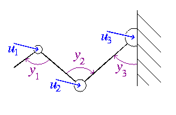
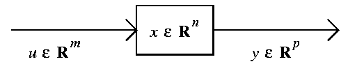

(For a nice survey of linear systems and the pole placement problem, and
methods developed to study it, see
[By].)
Consider the following problem:
We wish to understand and control the behaviour of a
(mechanical) linkage driven by torques ui
applied to each joint with measured angular displacements
yi:

Setting vi := i th angular velocity, this evolves
according to the linearized Newton equation:
dvi /dt
= Ii ui
dyi /dt
= vi
More generally, consider a physical system with m inputs
and p outputs, which we model as vectors u in
Rm and y in
Rp.
If this system is linear, or is near equilibrium, then there are n
internal states x, which we consider as a vector in
Rn, such that the system is governed by a first
order linear evolution equation:
dx/dt
= Ax + Bu
y
= Cx
We represent this schematically:

The Fourier transform of the first equation gives
sx = Ax + Bu.
If we solve this for x and substitute into the second equation,
we obtain:
y = C(sI - A)-1Bu.
The multiplier
C(sI - A)-1B
is called the transfer function.
This p by m-matrix of rational functions determines the response
of the measured quantities y in terms of the inputs u, in the
frequency domain.